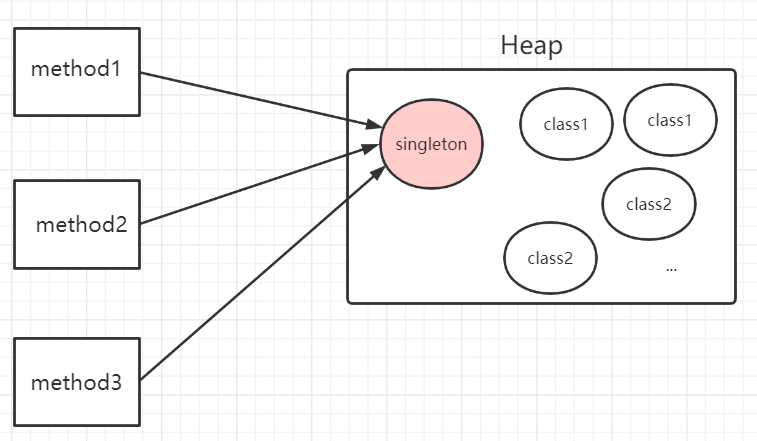
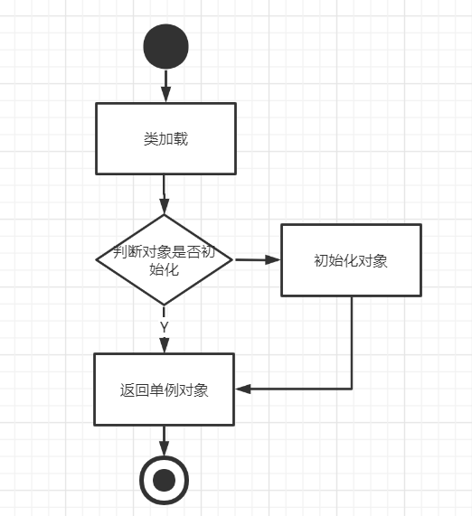
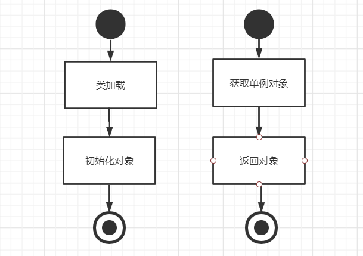

最近在忙着面试，趁着没工作的空闲期，想把设计模式好好整理一遍。话不多说，我们直接上第一个设计模式—-单例模式
什么是单例模式
这也是面试时面试官经常问我的问题，什么是单例模式？脑海中是不是立即浮现出两种单例模式。然后准备滔滔不绝的说给面试官听？面试官在问我们这个问题的时候，我们最好不要答非所问。最好根据单例模式的定义去正面回答面试官。
单例模式是指在内存中只会创建且仅创建一次对象的设计模式。在程序中多次使用同一个对象且作用相同时，为了防止频繁地创建对象使得内存飙升，单例模式可以让程序仅在内存中创建一个对象，让所有需要调用的地方都共享这一单例对象。

单例模式创建类型
懒汉式：在被程序第一次调用的时候才初始化该单例对象饿汉式：在类加载的时候就已经创建好该单例对象
懒汉式创建单例对象
懒汉式只在程序第一次调用的时候创建对象，所以需要调用的时候需要判断是否已经实例化该对象，如果未实例化，则实例化该对象。

1 | public class LazySingleTon { |
后面再讲这段代码的优化，我们先来看第二种单例模式的实现。
饿汉式创建单例对象
饿汉式在类加载的时候就已经初始化好该对象，后续程序调用的都是该对象。

1 | public class HungrySingleTon { |
这样类在加载时会在堆内存中创建一个HungrySingleTon对象，当类被卸载时，HungrySingleTon对象也就会被随之死亡了。
懒汉式代码如何优化
因为上述懒汉式的实现并不能保证在多线程环境下，对象只被创建一次的问题。因此存在一个线程安全的问题。我们回顾一下上面懒汉式创建的主要函数
1 | public static LazySingleTon getInstance(){ |
如果同时存在多个线程，线程1在判断了singleTon==null后让出了cpu的使用权，而线程二这时候获取到了cpu的使用权，也判断了一次singleTon==null那么线程2就会执行singleTon = new LazySingleTon(),当线程1重新获取到cpu的使用权之后，因为他刚判断了singleTon是null，所以线程1也会创建一个LazySingleTon的实例。所以就存在了线程安全的问题。
我们最容易想到的办法就是加锁，给类对象加锁或者给方法加锁。
1 | //给方法加锁 |
但上面两种方法都存在一个问题，在获取对象之前都要先获取锁，所以并发性能就显得尤其的低下。
1 | public synchronized static LazySingleTon getInstance(){ |
这样的实现方式，就完美的解决了性能低下和锁资源的问题。
- line2:当singleTon已经被实例化的时候,直接返回对象，不再获取锁资源
- line3:当多个线程进入第一个if时，施加同步锁，每次仅允许一个线程进去当前代码块。
- line4:锁内再次进行判断，因为多个线程抢夺一个资源时只有一个获取到，后进入的线程所要获取的对象已经被第一个线程实例化过。所以需要再次判断。
这就是典型的DCL型懒汉单例，Double Check and Lock双重校验加锁。但是我们在写DCL的时候都会加入volatile关键词修饰singleTon。
1 | public class LazySingleTon { |
原因是因为JVM在创建对象的时候，可以对指令进行重排序以提高程序性能。JVM在创建对象的时候，一般会经过以下三个步骤：
- 分配内存空间
- 初始化对象
- 将对象指向分配好的内存空间
但是在2和3的时候有可能出现指令重排。比如多个线程，当线程1执行了1-3而正在初始化对象，而线程2获取对象时，就获取到了一个未初始化的对象。就会出现空指针异常了。而volatile就是为了在JVM创建对象的时候进行禁止指令重排的。
还有其他的形式吗
静态内部类实现单例
静态内部类相对于DCL模式实现更简单，对静态域使用延迟初始化，应使用这种方式而不是双检锁方式。这种方式只适用于静态域的情况，双检锁方式可在实例域需要延迟初始化时使用。
1 | public class SingleTon { |
枚举类实现单例
在JDK1.5中，java引入了枚举类型。枚举是实现单例模式的最佳方法。它更简洁，自动支持序列化机制，绝对防止多次实例化。这种方式是《 Effective Java》 作者 Josh Bloch 提倡的方式，它不仅能避免多线程同步问题，而且还自动支持序列化机制，防止反序列化重新创建新的对象。
优点不言而喻：
- 实现更简单
- 天然的线程安全
- 可以防止反射、反序列化创建多个枚举对象
1 | public enum Singleton { |
破坏单例模式
枚举本身自带防止反射和反序列化的特性，那懒汉式和饿汉式又是如何被破坏的呢
反射破坏单例模式
下面我们就可以用反射直接强制访问私有构造器，去创建实例对象破坏单例。
1 | public static void main(String[] args) throws Exception { |
那如何防止单例模式被反射破坏呢，因为反射是强制访问私有构造器，对于饿汉式，在类加载的时候对象已经初始化，所以我们可以在私有构造器对当前对象进行判断来规避反射破坏单例模式
1 | public class HungrySingleTon { |
序列化和反序列化破坏单例模式
下面是一个序列化和反序列化去破坏单例的例子，但是使用序列化和反序列化破坏单例时，单例对象的类必须实现Serializable接口。
1 | public class HungrySingleTon implements Serializable{ |
总结
- 单例模式主要实现方式为懒汉式、饿汉式、静态内部类和枚举
- 大部分的单例模式可以被反射和序列化和反序列化破坏
- 我们可以通过人为干预来避免反射或系列化攻击
- 枚举自带天然的线程安全和单一实例以及防反射和防序列化和反序列破坏的特性
- 对于懒汉式最优雅的写法应该是DCL加volatile修饰
- 对内存要求高的时候我们可以选择
懒加载的单例实现方式

...
...